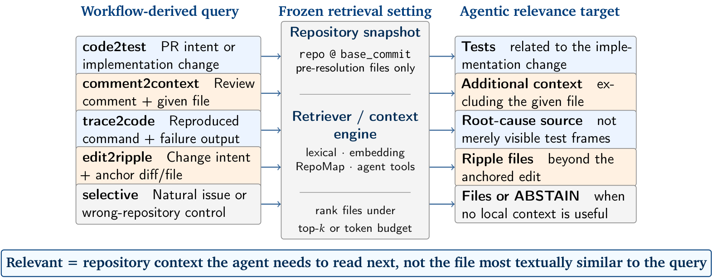
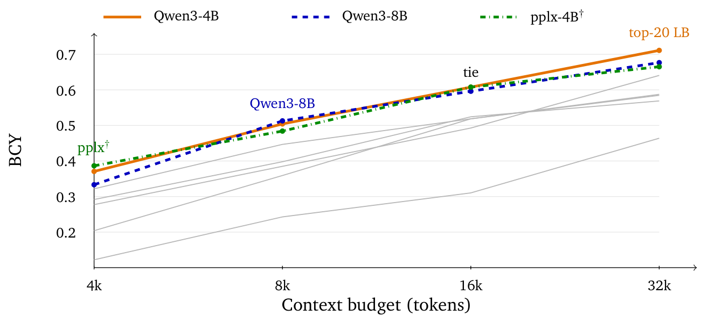

「上下文的纪律」系列 · 第 3 篇
上下文交给AI自己找，找得准吗？
▍动手之前，先看它怎么翻仓库
用过Codex CLI或Claude Code的读者，对这样的执行轨迹不会陌生：任务开始后的头十几步里，智能体在列目录、grep关键词、读文件之间来回切换，先把仓库翻一遍，然后才动手改代码。翻得顺，后面的修改水到渠成；翻偏了，改的文件根本不对，返工还得从找文件重新来。
从使用者的直觉看，找文件是个琐碎的前置步骤。但从工程角度看，这一步决定了进入模型上下文的材料是什么——上一期的两条使用纪律，容量控制和位置安排，都预设了一件事：知道该放什么进去。材料让智能体自己找，它找得准吗？
这个问题一直没有单独的答案。编码智能体的评测通常只看结果：补丁对不对、测试过不过。找文件这层能力嵌在端到端的分数里，失败了也看不见——没找到关键文件和没读懂关键文件，在分数上是同一种失败。本期论文把这一层单独拿出来，做了一次成规模的测量。
【人工补充位 · 建议2–4句】写一段你观察智能体轨迹的经历：你在哪类任务上见它翻找最久、或翻偏过（报错修复？跨模块改动？）；它当时grep的关键词，和后来证明该改的文件差多远。
本期论文
Agent Retrieval Bench: Evaluating Repository Context Retrieval for Coding Agents
智能体检索基准：评测编码智能体的仓库上下文检索
Bowen Qin（新加坡国立大学）、Yi Xie（北京大学），2026-07（arXiv:2607.24882）
一句话结论：427个来自真实工作流的检索任务上，没有全能的检索器——三项指标三个冠军、四类任务四个冠军；智能体自己交互翻找，仍有27–35%的任务从头到尾没碰到关键文件；语义与结构两类信号互补，零训练的融合就能明显提升。
名词速查
▸ gold文件（金文件）：样本标注的、智能体完成任务真正需要读的文件，由仓库工作流证据（PR、review、修复提交）背书。
▸ Recall@k与MRR：排序指标。Recall@20指前20名里找回了几成gold文件；MRR是"第一个gold文件排名的倒数"的平均值，0.24粗略对应第一个关键文件平均要排到第4名上下。
▸ BCY@8k：预算内上下文产出率。给定8k token的预算，按检索排序依次装入文件，看gold文件被装进去的比例。它测的是真实预算下够不够用，比名次更贴近工程。
▸ RepoMap：aider所用的结构化仓库地图，不依赖嵌入模型，按代码结构给文件排序，代表"结构信号"这一路。
▸ RRF：倒数排名融合。把多个检索器给出的排名合并成一个的零训练方法。
普通的代码搜索怎么定义"相关"？看语义像不像：查询和文件的内容越接近，越相关。编码智能体的工作流里，这个定义不够用。论文的引言给了几个具体情形：PR描述的是实现改动，智能体接下来该读的是回归测试；review评论指着A文件，缺的约束却写在B模块里；报错的调用栈显示的是测试文件，该改的根因文件和报错文本在语义上毫不相似。还有一种情形干脆反过来——问题的答案根本不在这个仓库里，在上游依赖或者用户自己的用法错误里，这时正确的动作是不找。
这就是论文的核心概念：面向智能体的相关性，由工作流的下一步需要什么来决定。
"…relevance in Agent Retrieval Bench is defined by what an agent needs next, not by direct semantic similarity between query and file."
── 中译：在Agent Retrieval Bench中，相关性由智能体下一步需要什么来定义，而不是由查询与文件之间的直接语义相似度来定义。（原论文摘要）
围绕这个定义，论文构造了四个正向检索任务和一个弃权任务，全部取材于真实仓库的工作流信号：
| 任务 | 工作流信号（查询） | 要找的文件（gold） | 样本数 |
|---|---|---|---|
| code2test | PR意图/实现改动摘要 | 对应的测试文件 | 106 |
| comment2context | review评论+被评文件 | 理解评论所需的额外文件 | 80 |
| trace2code | 复现命令+报错摘录 | 根因所在的实现文件 | 101 |
| edit2ripple | 定位编辑+改动意图 | 受波及的源码/测试文件 | 58 |
| selective | issue信号 | 无gold：应识别"本地无答案" | 50+32 |
表 1｜五个任务面（原论文Table 2及§4，作者整理）。50条自然无gold（维护者证据表明答案在上游依赖/外部服务/用户错误）+32条反事实错仓库对照
数据集的构造沿用了第1期那篇论文的严谨程度：25个仓库、6种语言，共427个样本；每个样本把仓库冻结在修复发生前的base commit上做检索，防止修复代码泄漏；查询文本做了清洗，移除补丁、修复提交哈希、gold文件的精确路径；四类致命泄漏（gold路径直出、原始diff、修复哈希、自动生成的review文本）的检查结果全部为零。

图 1｜基准协议：工作流信号作查询、冻结在base commit的仓库作语料，按"智能体下一步要读什么"定义相关性（原论文Figure 1）
论文在345个正向样本上跑了一排检索器：词法的BM25和路径感知的lexical、结构化的RepoMap、五个开源代码嵌入模型。结果没有一个全能冠军——三个总榜指标，三个不同的第一名：
| 指标 | 冠军 | 数值 | 说明 |
|---|---|---|---|
| MRR（345样本） | Qwen3-Embedding-4B | 0.2379 | 与第2名差距很小 |
| Recall@20 | Qwen3-Embedding-8B | 0.7029 | 前20名找回七成gold |
| BCY@8k | RepoMap | 0.3788 | 8k预算下产出率最高 |
| code2test冠军 | Qwen3-4B | MRR 0.3225 | 实现找测试，语义占优 |
| comment2context冠军 | jina-code-0.5b | MRR 0.3043 | 小模型也能单项夺魁 |
| trace2code冠军 | RepoMap | MRR 0.2742 | 报错找根因，结构占优 |
| edit2ripple冠军 | pplx-4B（暂定） | MRR 0.2877 | 分词器有问题，论文标暂定 |
表 2｜总榜三指标三个冠军，四类任务四个冠军（原论文Table 4/6，作者整理）
两个数字值得停下来看。MRR 0.24的意思是：就算用最强的检索器，第一个该读的文件平均也要排到第4名上下——而智能体的第一步通常只读一两个文件。Recall@20的0.70看着好些，但那是前20名的召回，第2期讲过，往上下文里塞20个文件早就越过有效边界了；换成8k token预算下的BCY，最好的也只有0.38。名次和预算两把尺子，量出来的都是同一个现状：静态检索远没有到"配好就能用"的水平。
分任务看，冠军的分布透露了原因：不同任务需要不同类型的信号。最极端的是trace2code——报错文本和根因文件在语义上不相干，语义嵌入在这里吃瘪：总榜MRR冠军Qwen3-4B在这个任务上MRR只有0.0827，Recall@20只有0.5050；反而是不用嵌入的RepoMap拿到0.8366的Recall@20和0.2742的MRR，连词法检索的MRR（0.2075）都比多数嵌入模型强。报错栈里露面的是测试文件和局部符号，结构信息能把它们连到旁边的实现文件，语义相似度连不上。
既然语义和结构各管一段，合起来会怎样？论文用RRF把Qwen3-8B和RepoMap的排名做了个零训练融合：整体MRR从最佳单模型的0.2296提到0.2713，Recall@20从0.7070提到0.7331；在trace2code上，融合后的Recall@20达到0.8795，超过了两个输入各自的0.8366和0.7970。两类信号互不替代，但合并几乎不花成本。

图 2｜edit2ripple任务上的BCY预算曲线：4k预算下Qwen3-4B领先，8k预算下Qwen3-8B反超——预算大小也改变冠军（原论文Figure 2；†为暂定运行，16k/32k点为下界）
图2还显示了另一个工程上要紧的细节：换一个预算，冠军就换人。edit2ripple任务上，4k token预算时Qwen3-4B的产出率最高，8k时Qwen3-8B反超。报告里只给一个分数的检索器评测，会把这些信息压扁掉。
顺带一提，论文自己做了个去偏检查：样本在仓库间分布不均（Gin一个仓库占了25.5%，前四名占58.8%），按仓库等权重新加权后，Recall@20的冠军从Qwen3-8B换成了Qwen3-4B。单一总分掩盖的东西，比它呈现的多。
静态榜单之外，论文还记录了交互式翻找的轨迹：在287个样本（code2test、comment2context、trace2code三任务）上，看真实智能体自己翻仓库能翻成什么样。参与测评的是OpenAI的严格上下文模式智能体（GPT-5.4-mini）和Codex CLI（GPT-5.4、GPT-5.5两个版本）：
| 智能体 | 每样本事件数 | 触达过gold | 从未触达gold | 首次命中中位步 |
|---|---|---|---|---|
| OpenAI GPT-5.4-mini（严格上下文） | 3.2 | 64.8% | 35.2% | 2 |
| Codex CLI GPT-5.4 | 6.2 | 72.8% | 27.2% | 3 |
| Codex CLI GPT-5.5 | 6.5 | 70.7% | 29.3% | 3 |
表 3｜交互翻找的轨迹成本与命中（原论文Table 13，287样本）。"首次命中中位步"只在最终触达gold的样本上统计
这里的要害在第三列：就算允许智能体交互式地翻找——grep、读文件、再grep——仍有三成上下的任务，它从头到尾没有碰过任何一个关键文件。这些任务在端到端评测里会记作失败，但没人知道失败在找文件这一步。
"Yet these trajectories still never touch any gold file on 35.2% of OpenAI samples and 27.2–29.3% of Codex samples."
── 中译：然而在这些轨迹中，35.2%的OpenAI样本和27.2–29.3%的Codex样本从未触碰过任何gold文件。（原论文§1）
把轨迹和静态检索的排名对到同一批样本上，还能看见互补的结构。以Codex GPT-5.4的轨迹和Qwen3-4B的检索为例：两边都命中的占50.9%；静态检索排进了前20、智能体却始终没碰到的占17.8%；反过来，智能体翻到了、静态检索前20却漏掉的占22.0%；两边都漏的占9.4%。两个方向都有可观的比例——静态检索能把智能体领到它自己找不到的文件跟前，交互翻找也能摸到检索排名漏掉的文件，谁也替代不了谁。
翻找的产出质量怎么说？按最终提交的上下文算文件F1：三个智能体在0.31–0.33之间，比静态检索取前3名的F1（最好的Qwen3-4B只有0.1247）高得多——多花几倍的工具调用和token，确实换来了更好的最终上下文。另一面，按8k预算的BCY算，融合检索器能达到0.4884，静态注入的性价比仍然占优。论文还观察到一个方向性的关联：按BCY把样本分成低中高三档，从低档到高档，Codex轨迹的gold触达率从0.600升到0.792，最终F1从0.268升到0.370——初始排序的质量，和轨迹翻找的结果正相关。
上面都是观察。论文接着做了一个干预实验，直接给"初始上下文的质量"标价：把Codex GPT-5.5关进固定的闭盒工具环境（只能用列目录、grep、读文件、提交四个动作，最多16次工具调用、8k读token），45个样本，只改一样东西——开局喂给它的上下文种子：
| 种子 | 最终F1 | 提升 | 触达gold | 翻找token（中位） |
|---|---|---|---|---|
| 不给种子 | 0.3222 | — | 51.1% | 2137 |
| 随机非gold文件 | 0.3437 | +0.0215 | 73.3% | 3682 |
| 词法检索结果 | 0.3981 | +0.0759 | 80.0% | 2244 |
| RRF融合结果 | 0.3967 | +0.0744 | 80.0% | 1857 |
| oracle（含gold） | 0.6337 | +0.3115 | 100% | 1736 |
表 4｜种子干预实验：同一闭盒策略，只换初始上下文（原论文Table 16，45样本，每臂单次运行）
这张表要先看随机那一行：随便塞几个不相关的文件，F1也能涨0.02——多给材料本身就有扰动收益。这提醒我们，检索种子的价值要相对这个基线看：词法和RRF种子各涨约0.075，而且翻找用的token比随机种子少将近一半（RRF为1857，随机为3682）——好的初始上下文不光把智能体领到文件跟前，还让它少翻。oracle一行是天花板：含gold文件的种子把F1抬到0.6337，救回了全部空手样本；但注意它也没到满分——文件找到了，最终选哪三个提交，仍是另一道坎。0.63和0.32之间的差距，就是"把对的材料在动手前备好"这件事的定价。
部署中的上下文引擎还有一职责：判断"这个问题本地仓库里没有答案"。50条自然无gold样本就是干这个的——维护者证据表明答案在上游依赖、外部服务或用户错误里，正确动作是别硬找。论文测了个最简单的弃权规则：检索的top分数低于阈值就弃权。
第一轮结果看起来不错：把345个正向样本、50条自然无gold和32条错仓库对照混在一起测（mixed协议），词法检索的弃权把成功率从0.461提到0.496。但这个"有用"站不住。那32条错仓库对照太好认了——拿一个仓库回答不了的问题去问另一个仓库，top分数会明显偏低，词法检索对这32条全部弃权。把它们拿掉、只在50条自然无gold上重新校准阈值再测（natural-only协议），结论整个翻过来：词法从0.499跌到0.294，jina从0.489跌到0.334，BM25从0.463跌到0.220——没有一个检索器的弃权比不弃权强。而那些"貌似合理、答案却在外部"的自然案例，词法检索只识别出34%。
论文把这个现象叫校准缺口。拆开说：弃权规则把检索打分当作置信度来用，而这个分数只在容易的情形里可靠——问错了仓库，分数确实会掉下来；到了真正需要判断的情形，问题本身合理、答案只是恰好不在本地仓库，打分和普通问题拉不开差距，弃权规则就失灵了。检索器不知道自己什么时候找不到。
前后两次测试的反转还有一层方法论上的含义：容易识别的错仓库样本混在测试集里，弃权的成绩被抬高了；把容易的样本剔出去、只在难例上重测，结论才反过来。如果论文只报告第一种结果，读者会以为弃权有用。第1期的AGENTS.md论文靠对照设置拆开混杂因素，这里靠剔除易例重测，是同一个道理。
▍注记：这篇论文的边界
427个样本是诊断性规模：每条样本都有工作流证据背书、构造昂贵，它不是海量统计基准；仓库分布也不均匀（Gin一个仓库占阳性样本的25.5%）。文件级命中不等于定位到行：gold文件中位515行，标注的有效证据区间中位只有27行（占文件的4.7%）——论文自己的行级敏感性分析显示，文件级Recall冠军按行F1算会掉到第四。它测的是上下文获取层，不声称检索失败导致修复失败，也不报告与补丁成功的相关性。种子干预实验每臂只跑一次轨迹，无温度与随机种子记录，论文明确称之为描述性先导。
▍写在找文件之后
这篇论文把"找上下文"从端到端的分数里拆出来单测了一次，量出的现状可以概括成三句话：静态检索没有全能冠军（最强的MRR只有0.24）；智能体自己翻，三成任务碰不到关键文件；该说"本地没有"的时候，检索器说不出口。找上下文是个能力短板，还轮不到把它当成配好就忘的管道。
落到自己的工作流上，这篇论文支撑三个动作：
1. 检索通道做互补：语义嵌入和结构信号各管一段，RRF融合零训练、近乎零成本，trace2code上的提升还最大。
2. 按任务类型选主通道：报错找根因，优先结构/词法信号；实现找测试，语义嵌入占优。单一嵌入通道包打天下的配置，在报错类任务上是短板配置。
3. 给智能体的初始上下文值得专门投入：种子实验里oracle与空手开局的0.31个F1差距，就是这件事的价值上限。问题只剩一个——开局之前，对的材料从哪来。
接着这个系列把上下文比作内存的说法：前两期讲的是这块内存的容量和布局，这一期做的是缺页统计——先量清楚缺页缺在哪，接下来才谈得上预取和按需调页。
【人工补充位 · 建议3–5句】结合你的工作流写评论：你的智能体现在检索是怎么配的（默认grep？建了索引？RAG？）；哪类任务你见过它翻偏或空转；看完这篇，你打算先动哪一个动作。
论文：Agent Retrieval Bench（arXiv:2607.24882v1，2026-07，Bowen Qin / Yi Xie）。文中图表均引自原论文（Figure 1/2）；表1–4依据原论文Table 2/4/6/13/16由作者整理，非原文截取；引文为原文直录并附中译；数字已逐项与论文PDF原文核对。种子实验数字为论文声明的单次先导实验值。